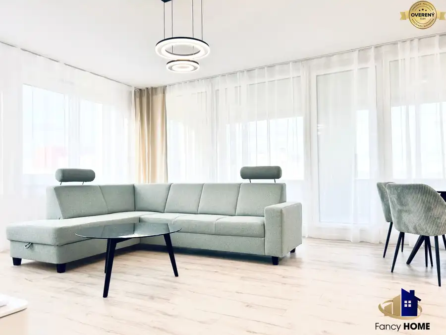
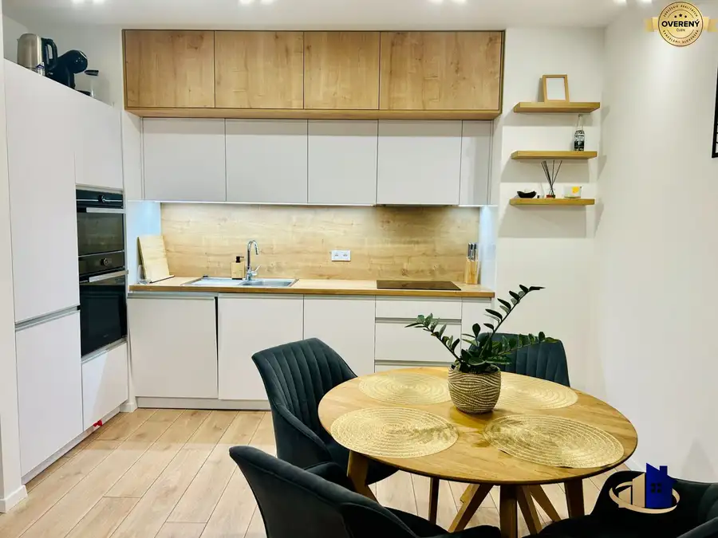
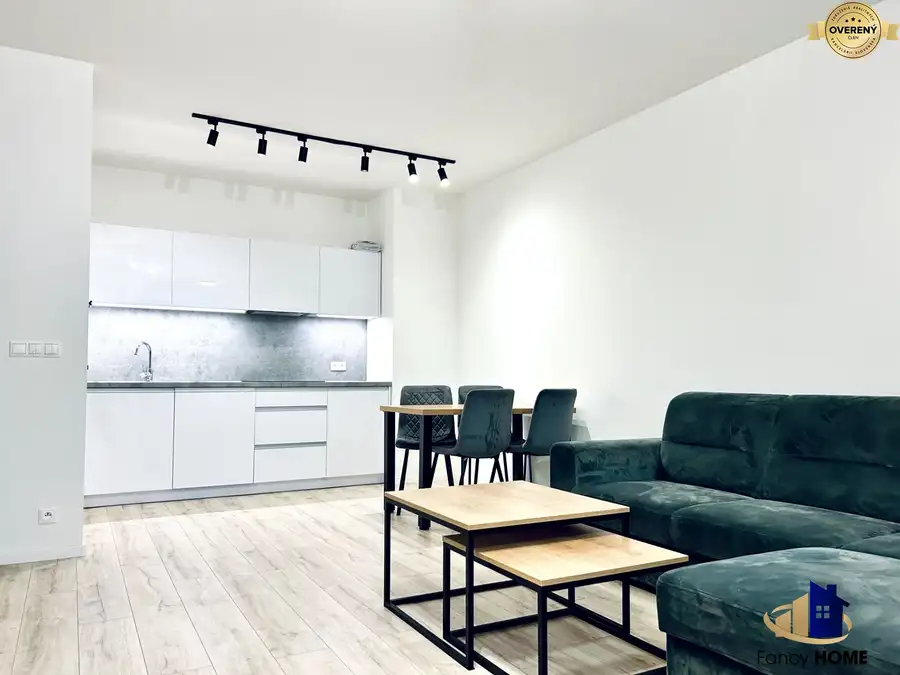

3 - izbový byt so záhradkou PRENÁJOM STUPAVA
Stupava
- Dispozícia3-izbový
- Plocha88 m²
- Poschodie1. z 1
- Stavúplne prerobený
- Vlastníctvoosobné
O nehnuteľnosti
Ponúkame Vám na prenájom unikátny dvojpodlažný 3 izbový byt so záhradkou. Obytná plocha bytu 88m2, záhradka o rozlohe cca 40m2. K bytu príslucha 2x vonkajšie parkovacie státie.
Rozloženie bytu prízemie: vstupná chodba, toaleta, kuchyňa spojená s obývačkou, špajzka.
Podlažie chodbička, spálňa, hosťovská/detská izba kúpelňa so sprchovacím kútom a toaletou.
Byt sa prenajíma v 5 ročnej novostavbe, v novo vybudovanej časti v Stupave na ulici Pastierska.
Byt sa prenajíma zariadený vrátane spotrebičov ako sú umývačka riadu, mikrovlnná rúra, TV, práčka a sušička.
Možnosť prenájmu aj s domácim zvieratkom.
Cena nájmu je 1.100€ + energie 100€
Depozit je 2 mesačný t.j. 2.400€
Byt je ihneď k dispozícií.
V prípade záujmu o obhliadku nás kedykoľvek kontaktujte.
Realitná kancelária Fancy HOME
Parametre
| Celková rozloha | 103 m² |
|---|---|
| Úžitková plocha | 88 m² |
| Poschodie | 1/prízemie |
| Počet poschodí | 1 |
| Počet izieb | 3 |
| Vlastníctvo | osobné |
| Stav | úplne prerobený |
| Internet | optika |
| Kúpeľňa | sprchovací kút |
| Vykurovanie | áno |
| Balkón | nie |
| Lódžia | nie |
| Terasa | áno |
| Pivnica | nie |
| Garáž | nie |
| Výťah | nie |
| Parkovanie | vonkajšie |
| Postavené z | iné |
| Zariadenie | čiastočne |
| Zateplený objekt | áno |
| Predzáhradka | áno |
| Okná | plastové |
| Orientácia | sever/juh |
| Novostavba | áno |
| Dátum zverejnenia | 16. 6. 2025 |
Kde to je
Mohlo by Vás zaujímať

BytPredané10 PredanéPRENÁJOM unikátny 3 izb byt POPRAD Karpatská 74 m2 Poprad 3-izbový74.01 m²6. podlažie Ponúkame Vám nadštandardný 3 izbový byt na prenájom s jedinečným výhľadom na Vysoké Tatry. Byt sa nachádza vo vyhľadávanej novostavbe Karpatská…
BytPredané10 PredanéPRENÁJOM Exkluzívny 2 izb byt Poprad Karpatská Residence Poprad 2-izbový54.9 m²10. podlažie Kľúčové vlastnosti: Skvelá lokalita – Takmer v centre mesta, v jednej z najobľúbenejších častí Popradu. Moderná novostavba – Byt je novopostavený s…
BytPredané10 PredanéPrenájom 2 izbový byt Poprad 2-izbový52.46 m²8. podlažie Moderný dizajn - pohodové bývanie. Byt je zariadený v súčasnom štýle s kvalitnými materiálmi a vybavením - kuchyňa + spotrebiče, vstavané skrine,…